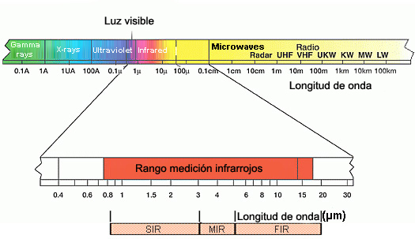

Todos los sistemas de imágenes térmicas están diseñados para utilizar radiación e iluminación infrarrojas, que abarca longitudes de onda de luz entre 0.7 y 350 μm. Toda la luz natural, visible e infrarroja, es un subproducto de un efecto llamado radiación térmica de cuerpo negro y está asociada con el calor. Cualquier objeto a una temperatura determinada irradia luz, y la temperatura del objeto determina cuánta radiación se emite y en qué longitud de onda, siguiendo lo que se denomina curva de radiación del cuerpo negro. Los objetos más calientes emiten longitudes de onda más cortas con mayor intensidad, en comparación con las emitidas por objetos más fríos. Las temperaturas asociadas con la luz visible suelen ser superiores a los 1000 ºC, mientras que los objetos a temperaturas más frías emiten en las bandas infrarrojas. Se suele dividir la radiación infrarroja en tres bandas. La banda del infrarrojo cercano está entre 0.7 y 4 μm (hasta 400 ºC), la del infrarrojo medio está entre 5 y 25 μm (hasta -150 ºC) y la del infrarrojo lejano, entre 25 y 350 μm, (Kopp, 2009).
Figura No.2 Comportamiento del infrarrojo en el espectro electromagnético
Fuente:NASA, 2013
El espectro electromagnético
Es el conjunto de todos los tipos de radiación que se desplazan en ondas y campos a través del espacio, también puede definirse como el conjunto de todas las ondas electromagnéticas que emite un espectro de emisión o absorbe un espectro de absorción.
La radiación electromagnética se produce siempre que una partícula cargada, como un electrón, cambia su velocidad, es decir, siempre que es acelerado o desacelerado. La energía de la radiación electromagnética así producida proviene de la partícula cargada y, por tanto, ésta la pierde, (Kopp, 2009).
El espectro electromagnético se extiende desde la radiación de menor longitud de onda, como los rayos gamma y los rayos X, pasando por la radiación ultravioleta, la luz visible y la radiación infrarroja, hasta las ondas electromagnéticas de mayor longitud de onda, como son las ondas de radio, (Kopp, 2009).
La ecuación c=fλ en el contexto del espectro electromagnético representa la relación entre la velocidad de la luz (c), la frecuencia (f), y la longitud de onda (λ) de las ondas electromagnéticas. Esta ecuación es una descripción fundamental de cómo las diferentes partes del espectro electromagnético se relacionan en términos de frecuencia y longitud de onda, (Kopp, 2009).
Por lo general, las radiaciones electromagnéticas se clasifican basándose en su longitud de la onda, Para su estudio, el espectro electromagnético se divide en segmentos o bandas, aunque esta división es inexacta. Existen ondas que tienen una frecuencia, pero varios usos, por lo que algunas frecuencias pueden quedar en ocasiones incluidas en dos rangos. El espectro electromagnético se mide en términos de la longitud de onda o la frecuencia de las ondas electromagnéticas. La longitud de onda y la frecuencia están relacionadas por la velocidad de la luz en el vacío, que es aproximadamente 3.00×108 metros por segundo (3.00×108 m/s3.00×108m/s) (Kopp, 2009).
En el mundo contemporáneo, el espectro electromagnético es un elemento clave para las telecomunicaciones y la transmisión de información. También es imprescindible en técnicas exploratorias (tipo radar/sonar) del espacio exterior como una forma de comprender fenómenos astronómicos distantes en el tiempo y el espacio, (Kopp, 2009).